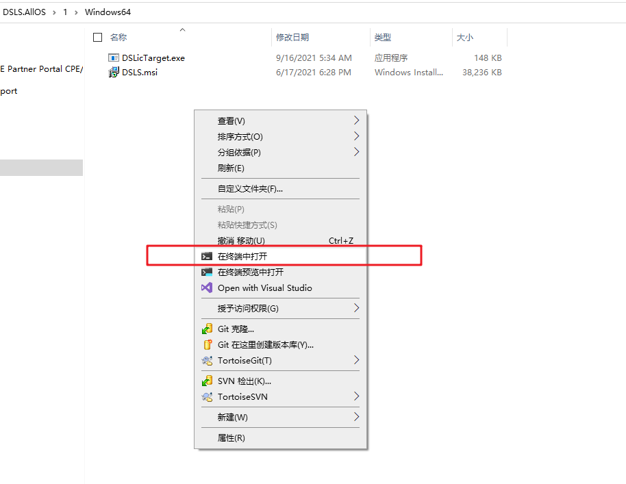
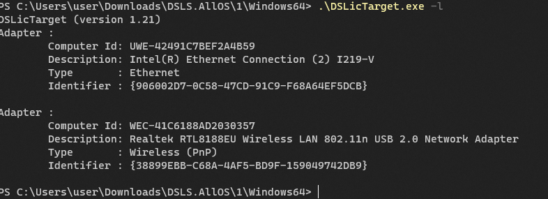

获得ID
2022-06-24
下载 7z 文件，解压出来。
获得当前网卡ID
.\DSLicTarget.exe -t
可以获得当前默认的网卡ID
把以上信息截图或者复制出来发送给我
获得所有

使用cmd 进入软件所在的目录，输入
.\DSLicTarget.exe -l
可以查看所有支持的网卡ID

获得帮助
.\DSLicTarget.exe -h
可以获得帮助，比如如何切换网卡等等，
PS C:\Users\user\Downloads\DSLS.AllOS\1\Windows64> .\DSLicTarget.exe -h
DSLicTarget (version 1.21)
C:\Users\user\Downloads\DSLS.AllOS\1\Windows64\DSLicTarget.exe:
-t : Display the computer id
-l : List available network adapters
-c : Clear Windows registry key
-s {...} : Use a specfic device identifier to generate the computer id. Ex: DSLicTarget -s {558CBA02-9E12-33F7-49A9-1154BED416A6}
切换网卡
.\DSLicTarget.exe -s {906002D7-0C58-47CD-91C9-F68A64EF5DCB}
这个就是之前命令打印出来的.
Identifier : {906002D7-0C58-47CD-91C9-F68A64EF5DCB}